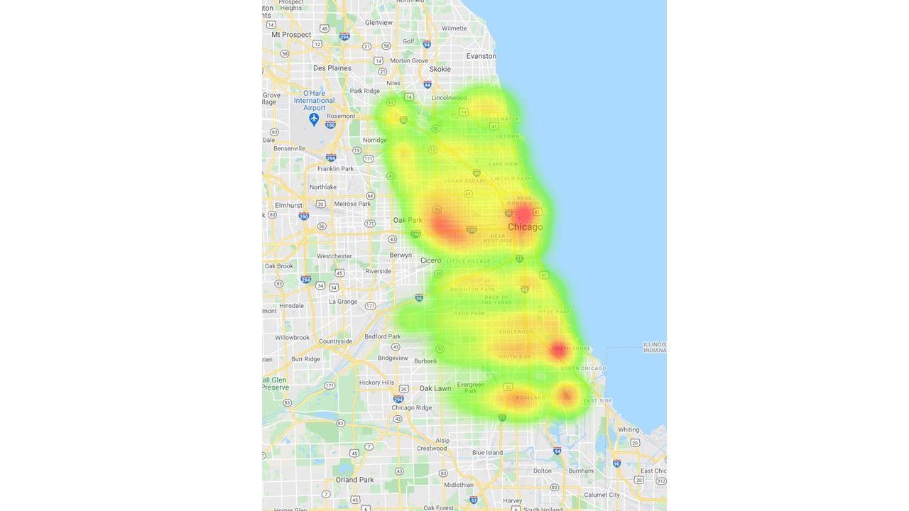
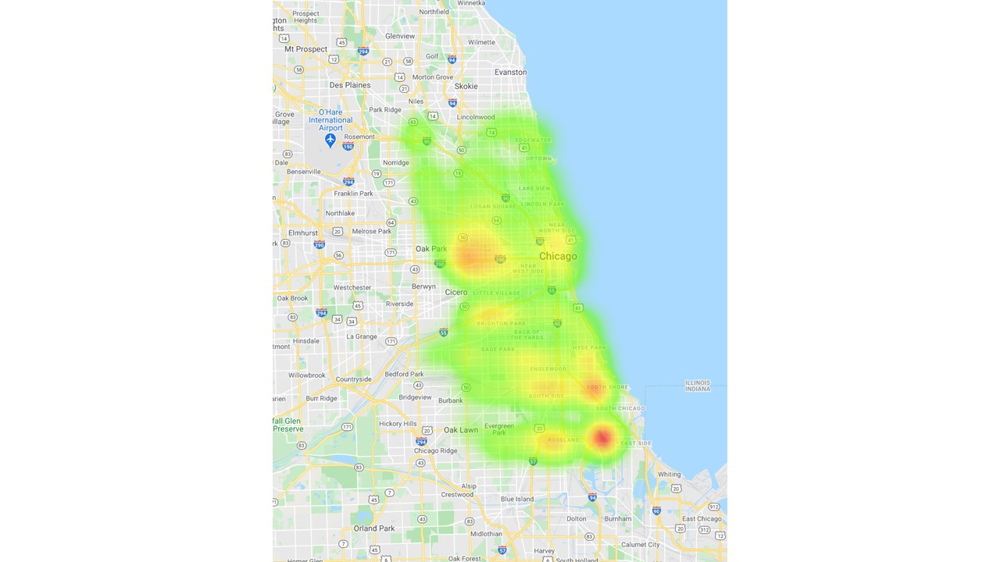

Chicago Crash Data

The Chicago skyline
The goal of the project was to analyze the Chicago crash data for any trends that might help in the development of strategies to mitigate future crashes and injury. At the
conclusion of our study, it seemed that a good place to start in tackling crash-related injuries/fatalities in Chicago would be roads that are some combination of:
- West-directed
- Posted speed limit of 30 mph
- Not divided, divided by a non-raised median, or one-way
- Within the area near East Side that is the brightest hotspot on the fatalities heatmap
These efforts could also be focused:
- Between the months of October and December
- During the day
- Under clear skies
- When roads are dry

A heatmap showing the areas of Chicago with the most crash-related injuries

A heatmap showing the areas of Chicago with the most crash-related fatalities